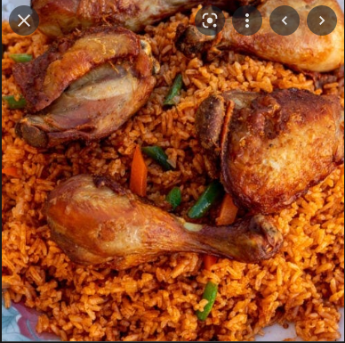

Rice Recipe

Description
Fried rice is a dish of cooked rice that has been stir-fried in a wok or a frying pan and is usually mixed with other ingredients such as eggs, vegetables, seafood, or meat.
ingredients
- Parboiled rice
- Curry powder
- Thyme
- Bay leaf
- Beef liver
- Onion
- White pepper
- Garlic
- oil
Steps
- Boil rice with seasoning.
- Sauté seasoned chicken. Remove from pot.
- Sauté beef liver. Remove from pot.
- Sauté onions. Add garlic and ginger so the spices can bloom in the oil.
- Add vegetables to sauteed onions.
- Add rice to the pot and stir.
- Add back chicken and liver to the pot and st
Home page